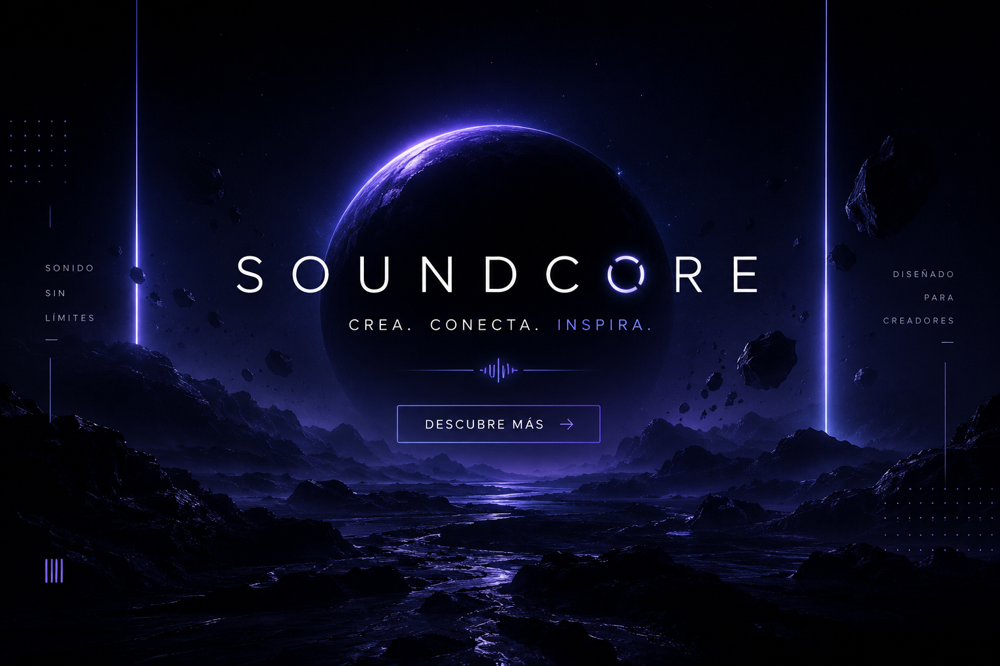
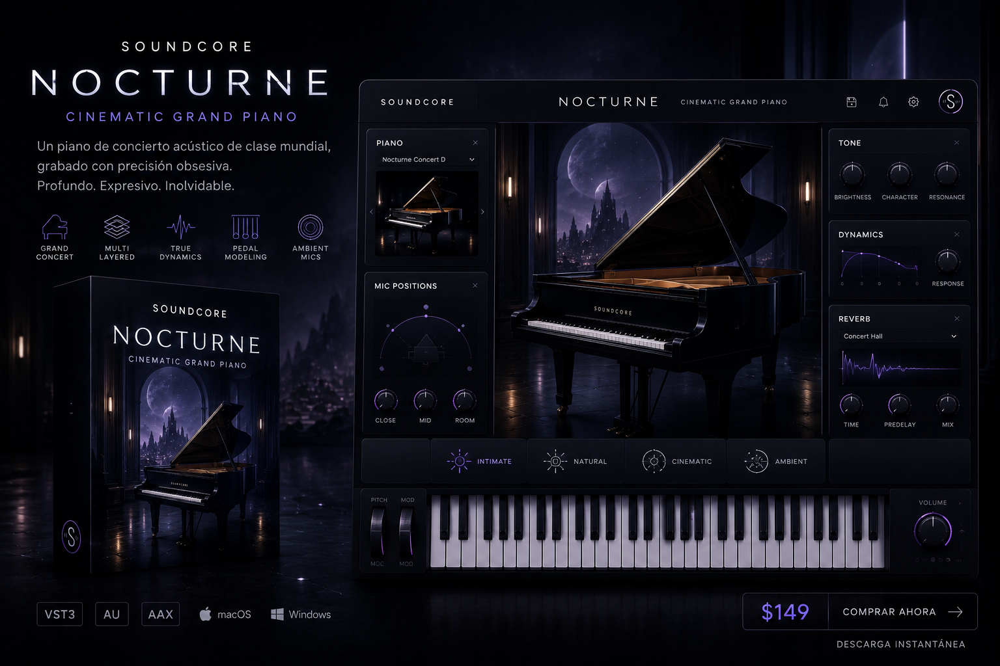
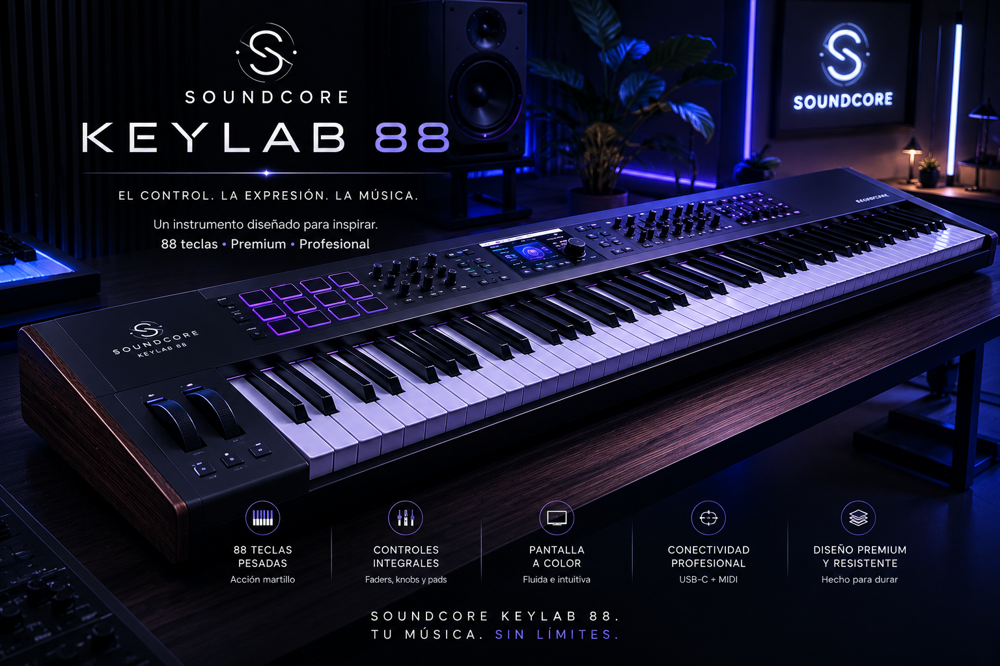

Nebula X Black
"Un potente plug‑in que reúne los mejores sonidos cinematográficos, sub‑bass profundos, pads orgánicos y texturas envolventes para dar vida a tus proyectos"

Synth Core Sound
"El sintetizador virtual más avanzado de SoundCore, creado para ofrecer una paleta sonora versátil y de alta calidad"

Synth Nocturne
"Un plug‑in que recrea con precisión los pianos con pedal más realistas, desde los clásicos Piano Rochester hasta modelos de gama alta como MounFerte"

SoundCore Keylab de 88 teclas
"El piano oficial MIDI de SoundCore, optimizado para integrarse perfectamente con DAWs como FL Studio, Ableton live, Pro tools, Cubase, y otros entornos profesionales"